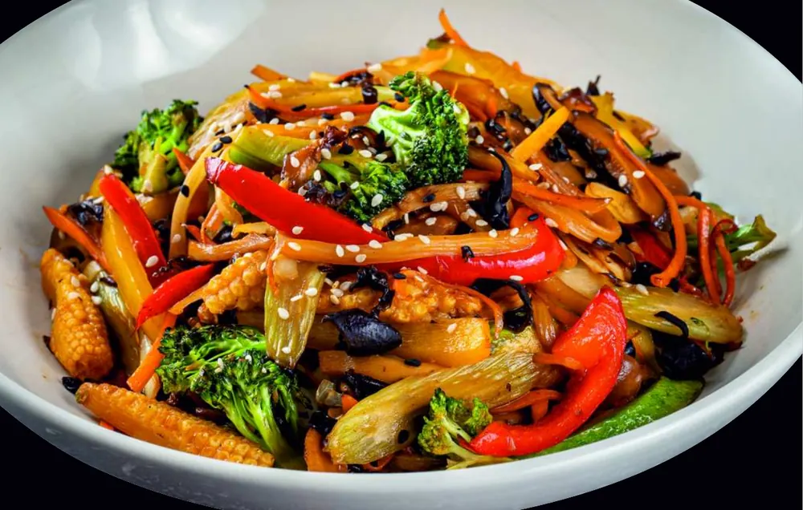

Ești vegetarian, vegan sau eviți glutenul și te întrebi dacă ai ce mânca la un restaurant asiatic? Ai, și încă destul. Trebuie doar să știi ce să alegi și ce să ceri. Mai jos găsești preparatele potrivite din meniul Wok and Noodles, cum îți compui un bol de wok doar din legume și unde se ascunde glutenul în bucătăria asiatică.

Ce comanzi dacă ești vegetarian
Vestea bună: bucătăria asiatică e una dintre cele mai prietenoase cu vegetarienii. La Wok and Noodles găsești câteva preparate gândite fără carne și pește, plus posibilitatea să îți construiești singur bolul de wok.
Supele din meniu sunt pe bază de carne sau fructe de mare, așa că nu sunt potrivite pentru vegetarieni.
Bolul de wok 100% din legume
Cea mai flexibilă variantă e wok-ul personalizat. Pornești de la o bază de 26 de lei (tăiței sau orez, cu varză, morcov și ceapă verde) și adaugi doar legume:
- Ciuperci shiitake sau urechi de lemn — 5 lei (dau gustul „cărnos”, umami)
- Broccoli sau ardei gras — 4 lei
- Bambus, zucchini, fasole verde, baby corn — 3 lei
- Țelină — 2 lei
- Arahide prăjite — 5 lei (pentru crocant și proteine)
- Ou — 3 lei, dacă mănânci ou
🥢 Combinația noastră preferată: tăiței udon + ciuperci shiitake + broccoli + arahide + sos teriyaki. Sățios, umami, crocant — 40 de lei și nu simți lipsa cărnii.
Dacă ești vegan
Aici trebuie puțin mai multă atenție. Tăițeii din ou conțin, evident, ou. Mai multe rulouri de sushi conțin brânză sau cremă de brânză, iar unele au maioneză. Ce să ceri:
- Bază de tăiței din orez, pad thai sau udon (nu din ou), doar cu legume și fără ou.
- Sos de soia, sriracha sau sweet chili. Sosul oyster e făcut din stridii, deci nu e vegan.
- La sushi, Veggi Roll e varianta cea mai apropiată. Întreabă la comandă dacă e compatibil vegan în ziua respectivă.
Fără gluten: ce e sigur și ce nu
Glutenul apare în bucătăria asiatică în două locuri: în tăiței și în sosuri. Mulți se uită doar la tăiței și uită de sos.
| Ingredient | Gluten? | Observații |
|---|---|---|
| Tăiței din orez, pad thai | Nu, în mod natural | Cea mai bună bază |
| Orez prăjit, orez simplu | Nu, în mod natural | Atenție la sosul cu care e gătit |
| Udon, ramen, tăiței din ou | Da | Sunt din grâu |
| Sos de soia clasic | Da | Se face cu grâu. Alternativa e tamari |
| Teriyaki, oyster | De obicei da | Conțin sos de soia |
| Preparate crispy, tempura | Da | Pesmet și făină |
La Wok and Noodles poți cere la comandă varianta fără gluten, iar sosul de soia se înlocuiește cu tamari. O bază de tăiței din orez cu legume sau pui și sos tamari e o alegere bună.
⚠️ Dacă ai boală celiacă: într-o bucătărie în care se gătesc și preparate cu grâu, pe aceleași wok-uri, riscul de contaminare încrucișată nu poate fi exclus complet. Spune-ne explicit la comandă că e vorba de celiachie, nu doar de preferință, ca să îți putem spune sincer ce se poate face.
Cum comanzi corect
- Spune de la început: „sunt vegetarian / vegan / fără gluten”.
- La wok, cere bază de tăiței din orez și sos tamari, dacă eviți glutenul.
- La livrare prin Glovo sau Wolt, scrie restricția în câmpul de observații.
- Pentru alergii serioase, sună direct la 0770 803 320 înainte să comanzi.
Toate preparatele au alergenii marcați în meniu, conform Regulamentului UE 1169/2011. Vezi meniul complet sau citește ghidul nostru despre tipurile de tăiței.
Întrebări frecvente
Ce preparate vegetariene aveți la Wok and Noodles Galați?
Veggi Roll, President Sushi, maki cu avocado sau cu brânză și castravete, salată caldă asiatică, salată de ciuperci urechi de lemn, orez cu usturoi și ou, plus bolul de wok pe care îl compui doar din legume.
Pot comanda tăiței fără gluten?
Da. Cere bază de tăiței din orez sau pad thai și sos tamari în loc de sos de soia. Dacă ai boală celiacă, spune explicit la comandă, pentru că riscul de contaminare încrucișată într-o bucătărie cu grâu nu poate fi exclus complet.
Sosul de soia conține gluten?
Da, sosul de soia clasic se face cu grâu. Alternativa fără gluten este tamari. Și sosurile teriyaki și oyster conțin de obicei sos de soia.
Ce pot comanda dacă sunt vegan?
Un bol de wok cu tăiței din orez, pad thai sau udon, doar cu legume, fără ou, cu sos de soia, sriracha sau sweet chili. Evită sosul oyster, care e făcut din stridii.
Supele sunt vegetariene?
Nu. Supele din meniu sunt pe bază de vită, porc, pui sau fructe de mare.